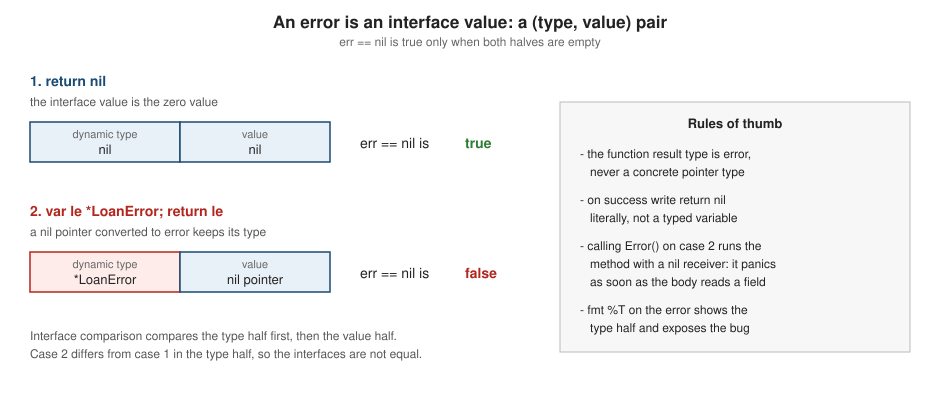

Error Handling
|
This content was generated with the assistance of AI and should be verified against the official documentation before being relied on in production. |
This page is written against Go 1.27 (go1.27.2), checked on 2026-10-18; every go.mod shown has the line go 1.27.
Go has no exceptions. A function that can fail returns an error as an ordinary value, usually as its last result, and
the caller decides what to do with it. This page covers the whole model: what an error is, how to create, classify,
wrap, combine and inspect errors (including errors.AsType, new in Go 1.26), the classic nil-interface trap, how
defer can add context or keep a Close error, when a program may panic instead, the compile errors and go vet
reports you will meet, and why the language has never gained error-handling syntax.
It builds on Interfaces (an error is an interface value),
Functions, Closures and Defer (multiple results,
defer, panic and recover) and
Structs and Embedding. Later pages use it:
Testing, Context,
Structured Logging with slog and
I/O, Files and the Filesystem. For other languages'
approaches, see
Rust error handling (the closest relative: errors are values there too),
Swift,
Java,
Kotlin,
C#,
Python and
C.
Every example was compiled, vetted with go vet and run with Go 1.27.2; the output shown is the real output (compiler
and vet messages are likewise copied from real runs). The go.mod of the example module is:
module example.com/shelf
go 1.27Errors are values
The language knows exactly one thing about errors: the predeclared interface type error, defined by the specification
(section Errors) as
type error interface {
Error() string
}Any type with an Error() string method is an error. There is no base class, no throws clause and no special control
flow: error is a normal interface value, nil means "no error", and a function reports failure by returning one.
The Go blog’s Error handling and Go presents this as a design choice. Because
errors are values, they can be stored, compared, wrapped, counted, collected and tested like any other value, and the
whole language is available to handle them. The companion post Errors are values
makes the same point with patterns that avoid repeating checks (see Programming with errors
below).
Conventions that every Go program follows:
-
the error is the last result:
func ParseISBN(s string) (ISBN, error); -
when the error is non-nil, the other results are not meaningful and are normally the zero value; callers must not use them;
-
the caller checks immediately with
if err != niland, for the failure branch, returns early so that the happy path stays at the left margin (the "indent error flow" rule of the Code Review Comments); -
an error is never signalled in-band (
-1,"",nilpointer) when a second result can carry it; -
ignoring an error is a visible decision: write
_ = f.Close()or handle it. Omitting the assignment entirely compiles for calls whose results are unused, which is why linters such aserrcheckexist (see Compile errors and vet reports).
package main
import (
"errors"
"fmt"
"strings"
)
type ISBN string
// ParseISBN returns the error last, as the convention requires.
func ParseISBN(s string) (ISBN, error) {
d := strings.ReplaceAll(s, "-", "")
if len(d) != 13 {
return "", fmt.Errorf("isbn %q has %d digits, want 13", s, len(d))
}
return ISBN(d), nil
}
func main() {
isbn, err := ParseISBN("978-0-13-419044-0")
if err != nil {
fmt.Println("failed:", err)
return
}
fmt.Println("parsed:", isbn)
_, err = ParseISBN("12-34")
if err != nil {
fmt.Println("failed:", err)
}
e1 := errors.New("not found")
e2 := errors.New("not found")
fmt.Println(e1 == e2, e1 == e1)
fmt.Printf("%T %v\n", e1, e1)
}parsed: 9780134190440
failed: isbn "12-34" has 4 digits, want 13
false true
*errors.errorString not foundSource: Effective Go: Errors
errors.New(text) returns a pointer to a fresh unexported struct holding the text, so two calls with the same text
return different errors: e1 == e2 is false and e1 == e1 is true, which is what makes a package-level errors.New
value usable as an identity (see the next section). fmt.Errorf formats like fmt.Sprintf; without a %w verb it
is equivalent to errors.New(fmt.Sprintf(...)), and since Go 1.26 fmt.Errorf("constant") allocates about as little as
errors.New("constant").
Source: errors.New and fmt.Errorf
Writing error messages
The Code Review Comments, section Error Strings, give the rules:
-
start with a lowercase letter and do not end with punctuation or a newline, because errors are usually embedded in longer messages (
"borrow: lookup 9780134190440: book not found"). Exceptions are proper nouns and exported names; -
each layer says what it was trying to do, and does not repeat what the layer below already said. The chain reads like a sentence from the outside in: operation, then detail, then cause;
-
do not put the word "failed" or "error" in every layer, and do not include the type name that
%Twould print; -
log messages and user-facing messages are a different thing: an error string is for developers and for logs. Translate it for the end user at the program’s boundary.
An error that carries a package prefix ("catalog: invalid ISBN") tells the reader which package produced it when it
reaches a log far from the source; many standard-library errors do this, many application errors do not need it.
Sentinel errors, custom error types and constant errors
There are three common ways to let a caller recognise a particular failure. They differ in what they promise as API.
-
A sentinel error is a package-level variable created with
errors.New. The caller tests it witherrors.Is(older code used==). Standard examples areio.EOF,fs.ErrNotExist,sql.ErrNoRowsandcontext.Canceled. The variable name starts withErrby convention. -
A custom error type is a struct (or other type) with an
Errormethod that carries structured data: the file that failed, the status code, the ISBN. The caller extracts it witherrors.Asorerrors.AsType. Standard examples are*fs.PathError,*strconv.NumErrorand*json.SyntaxError. Name it...Error. -
A constant error is a defined string type whose
Errormethod returns the string. Because aconstcannot be reassigned, no other package can change what the error means (a sentinelvarcan be overwritten by any importer).
package main
import (
"errors"
"fmt"
)
// A sentinel error: a package-level variable callers compare against.
var ErrNotFound = errors.New("catalog: book not found")
// constError makes an error that cannot be reassigned.
type constError string
func (e constError) Error() string { return string(e) }
const ErrEmptyTitle = constError("catalog: empty title")
// LoanError is a custom error type carrying structured data.
type LoanError struct {
ISBN string
Member string
Reason string
}
func (e *LoanError) Error() string {
return fmt.Sprintf("loan %s to %s: %s", e.ISBN, e.Member, e.Reason)
}
func find(isbn string) error {
if isbn == "" {
return ErrNotFound
}
return nil
}
func lend(isbn, member string) error {
return &LoanError{ISBN: isbn, Member: member, Reason: "already on loan"}
}
func main() {
if err := find(""); err == ErrNotFound {
fmt.Println("direct comparison:", err)
}
var err error = ErrEmptyTitle
fmt.Println(err == ErrEmptyTitle, err == constError("catalog: empty title"))
err = lend("9780134190440", "ana")
if le, ok := err.(*LoanError); ok {
fmt.Println("member:", le.Member, "| reason:", le.Reason)
}
fmt.Println(err)
}direct comparison: catalog: book not found
true true
member: ana | reason: already on loan
loan 9780134190440 to ana: already on loanSource: The Go Programming Language Specification: Comparison operators and The Go Blog: Working with Errors in Go 1.13
How to choose:
| Style | Choose it when | Cost |
|---|---|---|
Sentinel |
Callers only need to know which failure happened and no data is attached. |
The variable becomes public API forever; it is mutable unless you use the constant form. |
Custom type with fields |
Callers need data (status, path, ISBN) or the failure has behaviour ( |
The type and its fields become public API; pointer vs value receiver matters for matching (see below). |
Constant error |
You want a sentinel nobody can reassign. |
Compared by value: any |
Opaque ( |
Nobody needs to branch on it; the text is for humans. |
Callers cannot react to the failure programmatically, which is often the right outcome. |
Each exported error is a commitment. The 1.13 blog post’s advice is to expose only what callers need: if you do not want
callers to depend on an error, return it without %w (see below) or as an unexported type. Comparing with == only
works for an error that was returned directly, with no wrapper in between; the wrapping functions below exist because
that stopped being true as soon as code started adding context. Writing err.(*LoanError) has the same weakness: it fails
on a wrapped error, which is why errors.As replaced it.
Wrapping errors
Adding context as an error travels up the stack without losing the original cause is wrapping. Go 1.13 added it to the language’s library (release notes: Go 1.13) in three pieces:
-
the
%wverb offmt.Errorfproduces an error whoseUnwrap() errormethod returns the operand; -
the convention that an error that wraps another has an
Unwrap() errormethod (and, since Go 1.20,Unwrap() []errorfor several); -
the functions
errors.Unwrap,errors.Isanderrors.Asin packageerrors.
package main
import (
"errors"
"fmt"
)
var ErrNotFound = errors.New("book not found")
func lookup(isbn string) error {
return fmt.Errorf("lookup %s: %w", isbn, ErrNotFound)
}
func borrow(isbn string) error {
if err := lookup(isbn); err != nil {
return fmt.Errorf("borrow: %w", err)
}
return nil
}
func main() {
err := borrow("9780134190440")
fmt.Println(err)
fmt.Println("==:", err == ErrNotFound)
fmt.Println("Is:", errors.Is(err, ErrNotFound))
// errors.Unwrap peels exactly one layer.
inner := errors.Unwrap(err)
fmt.Println("one layer:", inner)
fmt.Println("two layers:", errors.Unwrap(inner))
fmt.Println("three layers:", errors.Unwrap(errors.Unwrap(inner)))
// %v flattens the chain into text: the link is lost.
flat := fmt.Errorf("borrow: %v", lookup("9780134190440"))
fmt.Println("flat Is:", errors.Is(flat, ErrNotFound))
fmt.Printf("%T %T\n", err, flat)
// Errorf with a nil %w operand.
var none error
n := fmt.Errorf("wrapped nil: %w", none)
fmt.Println(n, errors.Unwrap(n) == nil)
}borrow: lookup 9780134190440: book not found
==: false
Is: true
one layer: lookup 9780134190440: book not found
two layers: book not found
three layers: <nil>
flat Is: false
*fmt.wrapError *errors.errorString
wrapped nil: %!w(<nil>) trueSource: fmt.Errorf and errors.Unwrap
What the output shows:
-
The message is the layers joined with
: `, outermost first. Each `fmt.Errorfcall added one layer. -
err == ErrNotFoundis false (the value is a wrapper), whileerrors.Is(err, ErrNotFound)is true. -
errors.Unwrapremoves exactly one layer and returns nil when there is nothing more to unwrap. It does not understandUnwrap() []error: it returns nil for a multi-error. PreferIs,AsandAsType, which traverse the whole tree, and useUnwraponly to walk a single chain on purpose. -
%v(or%s) formats the operand into the text but drops the link:errors.Is(flat, ErrNotFound)is false and the type is a plain*errors.errorString. Choose%wwhen callers may depend on the cause,%vwhen you want to hide it (to avoid making the cause part of your API) or when the operand is not an error. -
%wwith a nil operand does not panic: it prints%!w(<nil>)and the resulting error has no wrapped error. Checkerr != nilbefore wrapping, as every example does.
Writing your own wrapper
A custom type becomes a wrapper by adding Unwrap. The RowError of the next example adds the row number of an import
and exposes the cause:
type RowError struct {
Row int
Err error
}
func (e *RowError) Error() string { return fmt.Sprintf("row %d: %v", e.Row, e.Err) }
func (e *RowError) Unwrap() error { return e.Err }An Unwrap method that returns e.Err is all Is, As and AsType need. Embedding does not do this for you: embedding an
error field in a struct promotes the Error method, but you must still declare Unwrap explicitly.
Inspecting errors: Is, As and AsType
All three functions search the error tree: the error itself, followed by the errors obtained by repeatedly calling
Unwrap() error or Unwrap() []error. For a multi-error the traversal is depth first, in order (the error, then
the first child’s whole subtree, then the second child’s). The first match wins.
| Function | Question it answers | Matches when |
|---|---|---|
|
"Is this particular failure somewhere in the chain?" |
an error in the tree is |
|
"Is there an error of this type or interface in the chain? Give it to me." |
an error in the tree is assignable to the type of |
|
The same as |
the type assertion |
package main
import (
"errors"
"fmt"
"io/fs"
"os"
)
type LoanError struct {
ISBN string
Reason string
}
func (e *LoanError) Error() string { return "loan " + e.ISBN + ": " + e.Reason }
func lend() error {
return fmt.Errorf("checkout: %w", &LoanError{ISBN: "9780134190440", Reason: "already on loan"})
}
func main() {
err := lend()
// errors.As: declare a target variable and pass its address.
var le *LoanError
if errors.As(err, &le) {
fmt.Println("As:", le.ISBN, le.Reason)
}
// errors.AsType (Go 1.26): generic, no target variable, no vet trap.
if le, ok := errors.AsType[*LoanError](err); ok {
fmt.Println("AsType:", le.ISBN, le.Reason)
}
// The target may also be an interface type.
if t, ok := errors.AsType[interface {
error
Timeout() bool
}](err); !ok {
fmt.Println("no Timeout method:", t == nil)
}
// A standard-library example: *fs.PathError.
_, err = os.Open("/no/such/dir/catalog.json")
if pe, ok := errors.AsType[*fs.PathError](err); ok {
fmt.Println("op:", pe.Op, "| path:", pe.Path, "| err:", pe.Err)
}
fmt.Println(errors.Is(err, fs.ErrNotExist), errors.Is(err, os.ErrNotExist))
}As: 9780134190440 already on loan
AsType: 9780134190440 already on loan
no Timeout method: true
op: open | path: /no/such/dir/catalog.json | err: no such file or directory
true trueSource: errors.As and errors.AsType
errors.AsType was added in Go 1.26 (release notes). It is generic: the type
argument E must satisfy error, so the compiler rejects an impossible request, whereas errors.As with a bad target
type compiles and then panics at run time. It is also faster and removes the boilerplate declaration of the target variable. For an
interface type you want to look for, write the interface so it includes error, as the Timeout example does.
In code that must also build with older toolchains, errors.As remains the tool; in a module with go 1.26 or later,
prefer AsType for new code.
Rules to remember:
-
errors.Isis about identity or equivalence;errors.As/AsTypeare about type. UseIsfor sentinels,AsTypefor custom types. -
the
errors.Astarget must be a non-nil pointer to a type that implementserror, or to any interface type; otherwise it panics, andgo vetreports it before you run it (see below). -
Iswith an uncomparable target (a struct containing a slice, for example) never panics; it simply cannot match by==. Comparing two such errors directly with==panics at run time (see the pitfalls section). -
the tree includes errors from the standard library: an
os.Openfailure is a*fs.PathErrorwhoseErrfield is asyscall.Errno; itsIsmethod makes it matchfs.ErrNotExist(equivalentlyos.ErrNotExist) on every platform, which is why portable code testserrors.Is(err, fs.ErrNotExist)and not the operating system’s error number.
An error tree
The next picture shows the tree built by fmt.Errorf("import: %w", errors.Join(row, openErr)). The numbers are the order in
which Is, As and AsType visit the nodes.
import: ..."] --> B["2. errors.joinError
Unwrap() []error"] B --> C["3. *RowError
Row 3"] B --> F["6. *fs.PathError
open missing.json"] C --> D["4. fmt.wrapError
parse: ..."] D --> E["5. ErrInvalidISBN
errors.errorString"] F --> G["7. syscall.Errno
Is(fs.ErrNotExist) = true"] E -. "errors.Is(err, ErrInvalidISBN)" .-> E G -. "errors.Is(err, fs.ErrNotExist)" .-> G C -. "errors.AsType[*RowError]" .-> C F -. "errors.AsType[*fs.PathError]" .-> F
package main
import (
"errors"
"fmt"
"io/fs"
"os"
"strings"
)
var ErrInvalidISBN = errors.New("invalid ISBN")
type RowError struct {
Row int
Err error
}
func (e *RowError) Error() string { return fmt.Sprintf("row %d: %v", e.Row, e.Err) }
func (e *RowError) Unwrap() error { return e.Err }
// walk prints the error tree in the order errors.Is and errors.As visit it:
// depth first, parents before children.
func walk(err error, depth int) {
if err == nil {
return
}
first, _, _ := strings.Cut(err.Error(), "\n")
fmt.Printf("%s%T %q\n", strings.Repeat(" ", depth), err, first)
switch u := err.(type) {
case interface{ Unwrap() error }:
walk(u.Unwrap(), depth+1)
case interface{ Unwrap() []error }:
for _, c := range u.Unwrap() {
walk(c, depth+1)
}
}
}
func main() {
_, openErr := os.Open("missing.json")
row := &RowError{Row: 3, Err: fmt.Errorf("parse: %w", ErrInvalidISBN)}
err := fmt.Errorf("import: %w", errors.Join(row, openErr))
walk(err, 0)
fmt.Println()
fmt.Println("Is ErrInvalidISBN:", errors.Is(err, ErrInvalidISBN))
fmt.Println("Is fs.ErrNotExist:", errors.Is(err, fs.ErrNotExist))
if re, ok := errors.AsType[*RowError](err); ok {
fmt.Println("AsType row:", re.Row)
}
if pe, ok := errors.AsType[*fs.PathError](err); ok {
fmt.Println("AsType path:", pe.Path)
}
}*fmt.wrapError "import: row 3: parse: invalid ISBN"
*errors.joinError "row 3: parse: invalid ISBN"
*main.RowError "row 3: parse: invalid ISBN"
*fmt.wrapError "parse: invalid ISBN"
*errors.errorString "invalid ISBN"
*fs.PathError "open missing.json: no such file or directory"
syscall.Errno "no such file or directory"
Is ErrInvalidISBN: true
Is fs.ErrNotExist: true
AsType row: 3
AsType path: missing.jsonSource: errors and The Go Blog: Working with Errors in Go 1.13
The program walks the tree with the same traversal as Is: a node with Unwrap() error has one child, a node with
Unwrap() []error has many (here the errors.Join result, whose text is the children’s text joined by newlines; the
walk prints only the first line of each message).
Custom Is and As methods
Matching by == or by type is not always what you want. An error type may define:
-
Is(target error) bool, so that it matches a sentinel or a category even though it is a different value. The method should comparetargetonly; it must not callerrors.Ison its own wrapped error, because the caller oferrors.Isis already walking the tree; -
As(target any) bool, to expose itself as a different type or interface. It must set*targetand return true when it matches, and return false otherwise.
package main
import (
"errors"
"fmt"
"net/http"
)
var ErrNotFound = errors.New("not found")
// StatusError carries an HTTP status and matches by category.
type StatusError struct {
Code int
}
func (e StatusError) Error() string { return fmt.Sprintf("status %d", e.Code) }
// Is makes a 404 StatusError match ErrNotFound.
func (e StatusError) Is(target error) bool {
switch target {
case ErrNotFound:
return e.Code == http.StatusNotFound
}
t, ok := target.(StatusError)
return ok && (t.Code == 0 || t.Code == e.Code)
}
// Temporary is an optional behaviour of an error.
type Temporary interface {
error
Temporary() bool
}
// retryable wraps an error; its As method fills a *Temporary target.
type retryable struct{ error }
func (retryable) Temporary() bool { return true }
func (r retryable) As(target any) bool {
if p, ok := target.(*Temporary); ok {
*p = r
return true
}
return false
}
func main() {
err := fmt.Errorf("fetch: %w", StatusError{Code: 404})
fmt.Println(errors.Is(err, ErrNotFound))
fmt.Println(errors.Is(err, StatusError{Code: 404}))
fmt.Println(errors.Is(err, StatusError{Code: 500}))
fmt.Println(errors.Is(err, StatusError{}))
e2 := fmt.Errorf("fetch: %w", retryable{errors.New("busy")})
var tmp Temporary
fmt.Println(errors.As(e2, &tmp), tmp != nil && tmp.Temporary())
t, ok := errors.AsType[Temporary](e2)
fmt.Println(ok, t.Temporary())
}true
true
false
true
true true
true trueThe StatusError matches the sentinel ErrNotFound when its code is 404, matches another StatusError with the same
code, and matches an "any status" StatusError{} (the zero value acts as a wildcard in its Is method). The standard
library uses the same technique: syscall.Errno has an Is method that maps operating-system numbers to fs.ErrNotExist,
fs.ErrPermission, fs.ErrExist and errors.ErrUnsupported.
Matching value and pointer error types
AsType[NotFound] and AsType[*NotFound] ask about two different types. An error is found only if its dynamic type is
exactly the one you ask for (or has a matching As). If Error has a pointer receiver, only *T implements error, and
returning T{} is a compile error (shown in the compile errors section). Pick one form for each error type and use it
consistently; the standard library uses pointers for structs that carry data (*fs.PathError) and values for small
comparable ones (syscall.Errno).
package main
import (
"errors"
"fmt"
)
type NotFound struct{ ISBN string }
func (n NotFound) Error() string { return "not found: " + n.ISBN }
type Conflict struct{ ISBN string }
func (c *Conflict) Error() string { return "conflict: " + c.ISBN }
// classify uses a type switch on the unwrapped chain via errors.AsType.
func classify(err error) string {
if _, ok := errors.AsType[NotFound](err); ok {
return "404"
}
if _, ok := errors.AsType[*Conflict](err); ok {
return "409"
}
return "500"
}
func main() {
for _, err := range []error{
fmt.Errorf("a: %w", NotFound{"1"}),
fmt.Errorf("b: %w", &Conflict{"2"}),
errors.Join(errors.New("x"), fmt.Errorf("c: %w", &Conflict{"3"})),
errors.New("other"),
} {
fmt.Println(classify(err), "<-", err)
}
// A value-receiver error type and a pointer-receiver one are different
// types: NotFound{} matches NotFound, never *NotFound.
_, ok := errors.AsType[*NotFound](fmt.Errorf("a: %w", NotFound{"1"}))
fmt.Println(ok)
}404 <- a: not found: 1
409 <- b: conflict: 2
409 <- x
c: conflict: 3
500 <- other
falseSource: errors.AsType
The third case shows the Join tree again: classification finds the *Conflict buried in the second branch. The last
line shows that the value type NotFound does not satisfy a request for *NotFound.
Several errors at once: errors.Join and multiple %w
Sometimes more than one thing went wrong: three validation failures in a form, a failed operation plus a failed cleanup, or several goroutines that each returned an error. Go 1.20 (release notes) added two ways to represent that:
-
errors.Join(errs...)returns an error wrapping all non-nil arguments. ItsErrortext is the arguments' texts separated by newlines. If every argument is nil (or there are none), it returns nil, so the result can be returned and tested witherr != nildirectly. -
fmt.Errorfaccepts more than one%wverb and the result implementsUnwrap() []error.
package main
import (
"errors"
"fmt"
"io"
"io/fs"
)
var (
ErrNoTitle = errors.New("title is empty")
ErrNoAuthor = errors.New("no author")
ErrBadISBN = errors.New("bad isbn")
)
func validate(title, author, isbn string) error {
var errs []error
if title == "" {
errs = append(errs, ErrNoTitle)
}
if author == "" {
errs = append(errs, ErrNoAuthor)
}
if len(isbn) != 13 {
errs = append(errs, fmt.Errorf("isbn %q: %w", isbn, ErrBadISBN))
}
return errors.Join(errs...)
}
func main() {
err := validate("", "", "123")
fmt.Println(err)
fmt.Println("---")
fmt.Println(errors.Is(err, ErrNoAuthor), errors.Is(err, ErrBadISBN), errors.Is(err, io.EOF))
// A nil slice (or all-nil arguments) joins to nil: `err != nil` stays idiomatic.
fmt.Println(validate("Go", "Pike", "9780134190440") == nil, errors.Join(nil, nil) == nil)
// Multiple %w verbs in one Errorf (Go 1.20) build the same tree shape.
both := fmt.Errorf("sync: %w; %w", io.ErrUnexpectedEOF, fs.ErrPermission)
fmt.Println(both)
fmt.Printf("%T\n", both)
fmt.Println(errors.Is(both, io.ErrUnexpectedEOF), errors.Is(both, fs.ErrPermission))
// errors.Unwrap returns nil for a multi-error: it only follows Unwrap() error.
fmt.Println(errors.Unwrap(both) == nil)
// Join(...) is the type produced by errors.Join.
j := errors.Join(ErrNoTitle, ErrNoAuthor)
if u, ok := j.(interface{ Unwrap() []error }); ok {
fmt.Println(len(u.Unwrap()), u.Unwrap()[1])
}
}title is empty
no author
isbn "123": bad isbn
---
true true false
true true
sync: unexpected EOF; permission denied
*fmt.wrapErrors
true true
true
2 no authorSource: errors.Join and fmt.Errorf
Notes:
-
errors.Joinis the natural way to collect validation errors, as thevalidatefunction does, but its message is a multi-line string. If you display it in a one-line log or UI, split it, or build a custom type withUnwrap() []errorand your ownErrormethod. -
the concrete types are
*errors.joinErrorand*fmt.wrapErrors; do not depend on them, depend on theUnwrap() []errormethod. -
a multi-error has no single "cause":
errors.Unwrapreturns nil for it, whileIs,AsandAsTypesearch all branches. -
concurrent code uses the same tool:
errgroupingolang.org/x/syncreturns the first error, while collecting every error from many goroutines is usually done witherrors.Joinafter waiting (see Concurrency Patterns).
The nil-interface error pitfall
An interface value has two parts, a dynamic type and a dynamic value, and it equals nil only when both are empty. If a
function declared to return error returns a nil pointer of a concrete type, the result carries a type and is not
nil. This is one of the best-known Go traps (Bodner covers it in chapter 8 and the interfaces chapter; the specification
rule is in Comparison operators, "interface values are equal if they have
identical dynamic types and equal dynamic values or if both have value nil").

package main
import "fmt"
type LoanError struct{ Reason string }
func (e *LoanError) Error() string { return "loan: " + e.Reason }
// broken returns a typed nil pointer wrapped in a non-nil error interface.
func broken(fail bool) error {
var le *LoanError
if fail {
le = &LoanError{Reason: "on loan"}
}
return le // BUG: always a non-nil interface
}
// fixed returns an untyped nil on success.
func fixed(fail bool) error {
if fail {
return &LoanError{Reason: "on loan"}
}
return nil
}
func main() {
err := broken(false)
fmt.Println(err == nil, err != nil)
fmt.Printf("%T %v\n", err, err == (*LoanError)(nil))
fmt.Println(fixed(false) == nil)
fmt.Println("calling Error on the typed nil:")
defer func() { fmt.Println("recovered:", recover()) }()
fmt.Println(err.Error())
}false true
*main.LoanError true
true
calling Error on the typed nil:
recovered: runtime error: invalid memory address or nil pointer dereferenceThe program shows each symptom: err == nil is false even though the pointer inside is nil, %T reveals the concrete type,
the comparison with (*LoanError)(nil) is true, and calling Error() on the typed nil runs a method with a nil
receiver, which panics as soon as it reads a field. The fix is simple: have the function return the interface type and return the
literal nil on success, as fixed does. Never declare a variable of a concrete error type and return it as error
on the success path. Keep error-returning functions' result type as error, not *LoanError, for the same reason.
Adding context with defer, and keeping Close errors
defer runs after the return statement has set the result parameters, and a deferred closure can read and assign named
results (see Functions, Closures and Defer). That makes
two common error idioms possible.
-
One wrapper for every exit. A deferred closure wraps whatever error the function returns, so every
return errgains the same context without repeatingfmt.Errorfat each return. -
Not losing the Close error. For files opened for writing, the result of
Closemay be the only report of a failed flush or a full disk. Deferringf.Close()and ignoring its result silently loses it. Join it into the named result instead. (Vivien’s file examples ignore this error; for read-only files, ignoring it is acceptable.)
package main
import (
"errors"
"fmt"
"os"
"path/filepath"
)
// import wraps every failure with one deferred statement.
func importCatalog(path string) (err error) {
defer func() {
if err != nil {
err = fmt.Errorf("import %s: %w", filepath.Base(path), err)
}
}()
f, err := os.Open(path)
if err != nil {
return err
}
defer f.Close()
var buf [4]byte
if _, err := f.Read(buf[:]); err != nil {
return fmt.Errorf("read header: %w", err)
}
return nil
}
// write keeps the Close error of a file opened for writing.
func write(path string, data []byte) (err error) {
f, err := os.Create(path)
if err != nil {
return err
}
defer func() {
err = errors.Join(err, f.Close())
}()
_, err = f.Write(data)
return err
}
func main() {
dir, err := os.MkdirTemp("", "shelf")
if err != nil {
fmt.Println(err)
return
}
defer os.RemoveAll(dir)
if err := os.Chdir(dir); err != nil {
fmt.Println(err)
return
}
fmt.Println(importCatalog("missing.json"))
if err := os.WriteFile("empty.json", nil, 0o600); err != nil {
fmt.Println(err)
return
}
fmt.Println(importCatalog("empty.json"))
fmt.Println(write("ok.json", []byte("[]")))
}import missing.json: open missing.json: no such file or directory
import empty.json: read header: EOF
<nil>Source: The Go Blog: Defer, Panic, and Recover and errors.Join
Two details matter for the first idiom. The closure must test err != nil first, so it does not turn a successful return
into a non-nil error. And err must be the named result: a := in an inner scope (if _, err := f.Read(...)) creates a
new variable that the closure does not see, which is why the function above returns with an explicit return fmt.Errorf(...)
inside that block. Shadowing is the commonest way this idiom goes wrong (see the pitfalls section).
Errors from the standard library you should know
| Value or type | Meaning |
|---|---|
|
End of input. Not a failure: readers return it to signal a clean end, and |
|
Input ended in the middle of a structure that required more data. |
|
Portable file-system conditions (also reachable as |
|
Structured errors from |
|
Why a context ended. |
|
A query that must return a row found none. |
|
The requested operation is not supported (Go 1.21). |
|
Typed errors with fields; extract them with |
|
Interface implemented by run-time panics' values (index out of range, nil dereference, bad type assertion). |
errors.ErrUnsupported
Go 1.21 added errors.ErrUnsupported (release notes: Go 1.21) so that code can ask,
independent of package, "did this fail because it is simply not supported?" (for example, hard links on a file system
that lacks them). The documentation’s rule: functions do not return ErrUnsupported itself. They return an error
that satisfies errors.Is(err, errors.ErrUnsupported), either by wrapping it or by implementing an Is method, and they document
when they do so.
package main
import (
"errors"
"fmt"
"io"
"io/fs"
"strings"
"syscall"
)
type Exporter interface{ Export(format string) error }
type jsonOnly struct{}
func (jsonOnly) Export(format string) error {
if format != "json" {
return fmt.Errorf("export %q: %w", format, errors.ErrUnsupported)
}
return nil
}
func main() {
var e Exporter = jsonOnly{}
err := e.Export("xml")
fmt.Println(err)
fmt.Println(errors.Is(err, errors.ErrUnsupported))
// Operating-system "not supported" errors match it through their Is method.
fmt.Println(errors.Is(syscall.ENOSYS, errors.ErrUnsupported))
fmt.Println(errors.Is(syscall.EOPNOTSUPP, errors.ErrUnsupported))
fmt.Println(errors.Is(fs.ErrInvalid, errors.ErrUnsupported))
// io.EOF is the sentinel that is NOT an error condition for readers.
r := strings.NewReader("")
_, err = r.ReadByte()
fmt.Println(err == io.EOF, errors.Is(err, io.EOF))
}export "xml": unsupported operation
true
true
true
false
true trueSource: errors.ErrUnsupported
Context errors and causes
Cancelling a context.Context produces context.Canceled or context.DeadlineExceeded from ctx.Err(). Since Go 1.20,
context.WithCancelCause lets the canceller record why, and context.Cause(ctx) returns it; if no cause was recorded
it returns ctx.Err(). Wrapping Cause(ctx) keeps errors.Is working for both the generic condition and the specific
cause. See Context.
package main
import (
"context"
"errors"
"fmt"
"time"
)
func fetch(ctx context.Context) error {
select {
case <-time.After(time.Hour):
return nil
case <-ctx.Done():
return fmt.Errorf("fetch: %w", context.Cause(ctx))
}
}
var errShutdown = errors.New("server shutting down")
func main() {
ctx, cancel := context.WithTimeout(context.Background(), 10*time.Millisecond)
defer cancel()
err := fetch(ctx)
fmt.Println(err)
fmt.Println(errors.Is(err, context.DeadlineExceeded), errors.Is(err, context.Canceled))
ctx2, cancel2 := context.WithCancelCause(context.Background())
cancel2(errShutdown)
err = fetch(ctx2)
fmt.Println(err)
fmt.Println(errors.Is(err, errShutdown), ctx2.Err())
}fetch: context deadline exceeded
true false
fetch: server shutting down
true context canceledSource: context.Cause
Programming with errors
Because errors are values, repetition can be designed away. Rob Pike’s post
Errors are values shows two examples that the standard library uses itself:
bufio.Scanner stores the first read error and reports it from Err() after the loop, and a writer type can latch
the first error and turn later writes into no-ops. The errWriter below is the second kind (an original example in
the shelf domain).
package main
import (
"fmt"
"io"
"strings"
)
// errWriter remembers the first write error, so a sequence of writes can be
// checked once at the end.
type errWriter struct {
w io.Writer
err error
}
func (ew *errWriter) printf(format string, args ...any) {
if ew.err != nil {
return
}
_, ew.err = fmt.Fprintf(ew.w, format, args...)
}
// failAfter fails the n-th write.
type failAfter struct {
n int
sb strings.Builder
}
func (f *failAfter) Write(p []byte) (int, error) {
if f.n == 0 {
return 0, fmt.Errorf("disk full")
}
f.n--
return f.sb.Write(p)
}
func main() {
dst := &failAfter{n: 2}
ew := &errWriter{w: dst}
ew.printf("title: %s\n", "The Go Programming Language")
ew.printf("authors: %s\n", "Donovan, Kernighan")
ew.printf("isbn: %s\n", "9780134190440") // fails
ew.printf("pages: %d\n", 380) // skipped
fmt.Print(dst.sb.String())
fmt.Println("error:", ew.err)
}title: The Go Programming Language
authors: Donovan, Kernighan
error: disk fullSource: The Go Blog: Errors are values
The control flow is explicit, there is a single check at the end, and no write after the failure is attempted. The cost is that the pattern only fits operations that are safe to skip once an earlier one has failed.
Handle an error once
Each error should be handled in exactly one place: either return it (with context) or log it and carry on, never both.
Logging and returning produces duplicate lines for one failure at every level of the stack. The usual structure is that
inner layers wrap and return, and the edge of the program (a request handler, main) logs, translates to a status
code or exit code, and recovers. With log/slog, pass the error as an attribute so a handler can render it
(see Structured Logging with slog):
package main
import (
"errors"
"fmt"
"log/slog"
"os"
)
var ErrNotFound = errors.New("not found")
func find(isbn string) error {
return fmt.Errorf("find %s: %w", isbn, ErrNotFound)
}
func handler(isbn string) {
// Handle an error once: here it is logged and NOT returned further.
if err := find(isbn); err != nil {
slog.Error("lookup failed", "isbn", isbn, "err", err)
return
}
}
func main() {
slog.SetDefault(slog.New(slog.NewTextHandler(os.Stdout, &slog.HandlerOptions{
ReplaceAttr: func(groups []string, a slog.Attr) slog.Attr {
if a.Key == slog.TimeKey && len(groups) == 0 {
return slog.Attr{}
}
return a
},
})))
handler("9780134190440")
}level=ERROR msg="lookup failed" isbn=9780134190440 err="find 9780134190440: not found"Source: slog.Logger.Error
The run pattern and exit codes
main cannot return an error, and os.Exit skips deferred functions. A common structure puts the logic in a run
function that returns an error and keeps main tiny: it prints the error, picks the exit code and calls os.Exit once.
log.Fatal is Print followed by os.Exit(1); avoid it outside main because it makes the code impossible to test.
package main
import (
"errors"
"fmt"
"os"
)
var ErrUsage = errors.New("usage: shelf <isbn>")
// run holds the logic and returns an error; main only decides the exit code.
func run(args []string) error {
if len(args) != 1 {
return ErrUsage
}
_, err := os.ReadFile(args[0])
if err != nil {
return fmt.Errorf("shelf: %w", err)
}
return nil
}
func main() {
if err := run(os.Args[1:]); err != nil {
fmt.Fprintln(os.Stderr, err)
if errors.Is(err, ErrUsage) {
os.Exit(2)
}
os.Exit(1)
}
}Run with the three possible outcomes (the exit status is shown by the shell):
$ shelf; echo "exit $?"
$ shelf a b; echo "exit $?"
$ shelf /nonexistent/x.json; echo "exit $?"usage: shelf <isbn>
exit 2
usage: shelf <isbn>
exit 2
shelf: open /nonexistent/x.json: no such file or directory
exit 1Source: os.Exit
Testing errors
Test the identity, not the text. A test that compares err.Error() with a string breaks whenever someone improves the
message, while errors.Is or errors.AsType keeps testing the contract. The table-driven test below puts the
expected error in the table (a nil want means "no error"; errors.Is(nil, nil) is true). The elapsed times in the
output vary from run to run.
package e14
import (
"errors"
"fmt"
"testing"
)
var ErrInvalidISBN = errors.New("invalid ISBN")
func parse(s string) error {
if len(s) != 13 {
return fmt.Errorf("parse %q: %w", s, ErrInvalidISBN)
}
return nil
}
func TestParse(t *testing.T) {
tests := []struct {
name string
in string
want error
}{
{"ok", "9780134190440", nil},
{"short", "123", ErrInvalidISBN},
}
for _, tc := range tests {
t.Run(tc.name, func(t *testing.T) {
got := parse(tc.in)
if !errors.Is(got, tc.want) {
t.Fatalf("parse(%q) = %v, want error matching %v", tc.in, got, tc.want)
}
})
}
}=== RUN TestParse
=== RUN TestParse/ok
=== RUN TestParse/short
--- PASS: TestParse (0.00s)
--- PASS: TestParse/ok (0.00s)
--- PASS: TestParse/short (0.00s)
PASS
ok example.com/shelf/e14 0.064sSee Testing for t.Run, helpers and fuzzing.
Panics and recover
panic and recover exist, but they are not the exceptions of other languages. The relevant rules are in the
specification (Handling panics and
Run-time panics) and in
Effective Go: Panic:
-
panic(v)stops the normal execution of the function, runs its deferred calls, then does the same up the stack, until the goroutine ends and the program crashes with exit status 2 and a stack trace. A panic in any goroutine without arecoverterminates the whole program. -
recover()stops the panicking and returns the panic value, but only when called directly by a deferred function; a helper called from the deferred function does not recover. Outside a panic it returns nil. -
the run-time itself panics for programmer errors: index out of range, nil map write, nil pointer dereference, failed type assertion, division by zero, closing a closed channel. Those values implement
runtime.Error. -
since Go 1.21
panic(nil)is no longer silently "no panic": the value becomes a*runtime.PanicNilError(release notes). Programs built from a module declaringgo 1.20or earlier keep the old behaviour, andGODEBUG=panicnil=1restores it.
An unrecovered panic as the user sees it:
package main
import "fmt"
func main() {
var m map[string]int
fmt.Println("before")
m["isbn"] = 1
fmt.Println("after")
}before
panic: assignment to entry in nil map(followed by the goroutine’s stack trace, and the process exits with status 2).
When a program may panic
The Code Review Comments (Don’t panic) say to use error for normal error
handling. The accepted uses of panic are narrow:
-
a programmer error or broken invariant that can never happen in a correct program (an
iotavalue outside its switch, an impossible state), where continuing is worse than crashing; -
a failure during program initialisation that makes the program unusable, which is why the
MustXxxconvention exists:regexp.MustCompileandtemplate.Mustpanic on a bad pattern or template, and are meant for package-level variables with constant input; -
an internal control-flow shortcut inside a package (a deeply nested parser), always recovered and converted into an
errorbefore the exported function returns. Theencoding/jsonandtext/templatepackages do this internally.
Never let a panic cross a package boundary as part of a public API, and do not panic for conditions the caller can cause with valid use: "file exists", a closed connection, bad user input.
with valid input or environment?"} Q1 -->|yes| E["Return an error
wrap with context"] Q1 -->|no| Q2{"Is it a broken invariant or
a bug in this program?"} Q2 -->|yes| P["panic is acceptable
fail fast and loudly"] Q2 -->|no| E P --> Q3{"Inside a package that must
not leak panics to callers?"} Q3 -->|yes| R["recover at the exported function
convert to error"] Q3 -->|no| C["Let it crash
a supervisor restarts the process"] E --> H["Handle once at the edge
log or translate"]
Recovering at a boundary
package main
import (
"errors"
"fmt"
"runtime"
)
// parseAll is internal code that panics on a corrupt input; the exported
// function converts the panic into an error at the package boundary.
type parseError struct{ err error }
func parseRow(row string) int {
if row == "" {
panic(parseError{errors.New("empty row")})
}
return len(row)
}
func ParseAll(rows []string) (total int, err error) {
defer func() {
switch r := recover().(type) {
case nil:
case parseError:
err = fmt.Errorf("parse: %w", r.err)
default:
panic(r) // not ours: keep panicking
}
}()
for _, r := range rows {
total += parseRow(r)
}
return total, nil
}
func safeIndex(xs []int, i int) (v int, err error) {
defer func() {
if r := recover(); r != nil {
if re, ok := r.(runtime.Error); ok {
err = re
return
}
panic(r)
}
}()
return xs[i], nil
}
func main() {
fmt.Println(ParseAll([]string{"ab", "cde"}))
fmt.Println(ParseAll([]string{"ab", ""}))
_, err := safeIndex([]int{1, 2, 3}, 7)
fmt.Println(err)
var re runtime.Error
fmt.Println(errors.As(err, &re))
// recover only works when called directly by the deferred function.
func() {
defer func() {
fmt.Println("recovered:", recover())
}()
panic("boom")
}()
// panic(nil) is a *runtime.PanicNilError since Go 1.21.
func() {
defer func() {
r := recover()
fmt.Printf("%T: %v\n", r, r)
}()
panic(nil)
}()
}5 <nil>
2 parse: empty row
runtime error: index out of range [7] with length 3
true
recovered: boom
*runtime.PanicNilError: runtime error: panic called with nil argumentSource: builtin.recover and runtime.Error
What to notice:
-
ParseAllpanics internally with a privateparseErrortype, and itsrecoverconverts exactly that type to an error. Any other panic value is re-panicked: swallowing unknown panics hides real bugs such as a nil dereference. -
safeIndexrecovers aruntime.Errorand returns it as an ordinaryerror, soerrors.Ascan find theruntime.Errorinterface. Recovering run-time errors this way is rare; a server typically recovers once per request, logs the stack (runtime/debug.Stack()), and returns a 500. -
recover()has no effect when called anywhere other than directly in the deferred function. -
panic(nil)produces*runtime.PanicNilError, sorecover()returns a non-nil value for it.
Go errors carry no stack trace by default. If you need one at the point of failure, capture it explicitly with
runtime/debug.Stack or runtime.Callers when you create or log the error, or add it as a structured attribute; libraries that attach
traces to every error are a trade-off, not a language feature.
Comparing uncomparable errors
An error value whose dynamic type is not comparable (it contains a slice, map or function) makes == between two such
interface values panic at run time. errors.Is checks comparability first and simply reports false.
package main
import (
"errors"
"fmt"
)
// multiError has a slice field, so its values are not comparable.
type multiError struct{ msgs []string }
func (m multiError) Error() string { return fmt.Sprint(m.msgs) }
func main() {
var a, b error = multiError{[]string{"x"}}, multiError{[]string{"x"}}
// errors.Is checks comparability first, so it reports false, not a panic.
fmt.Println(errors.Is(a, b))
defer func() { fmt.Println("recovered:", recover()) }()
fmt.Println(a == b) // run-time panic: comparing uncomparable type
}false
recovered: runtime error: comparing uncomparable type main.multiErrorThe practical rule: define error types with pointer receivers, or keep them comparable, so that sentinel comparisons stay safe.
Compile errors and vet reports
These are the diagnostics that come up with errors. Each is copied from a real run of the failing snippet on Go 1.27.2.
Wrong receiver kind. Error has a pointer receiver, so only *NotFound implements error. A string is not an
error either, and a typed variable that is never used is rejected:
package main
import (
"fmt"
"strconv"
)
type NotFound struct{ ISBN string }
func (n *NotFound) Error() string { return "not found: " + n.ISBN }
func find() error {
return NotFound{"1"}
}
func name() error {
return "oops"
}
func main() {
n, err := strconv.Atoi("12")
m, err := strconv.Atoi("34")
fmt.Println(n, m)
x, err := strconv.Atoi("56")
fmt.Println(x)
e := error.New("x")
}./main.go:13:9: cannot use NotFound{…} (value of struct type NotFound) as error value in return statement: NotFound does not implement error (method Error has pointer receiver)
./main.go:17:9: cannot use "oops" (constant of type string) as error value in return statement: string does not implement error (missing method Error)
./main.go:21:5: declared and not used: err
./main.go:26:2: declared and not used: e
./main.go:26:13: error.New undefined (type error has no field or method New)errors.As with a non-pointer target. This compiles, panics at run time, and is reported by go vet
(analyzer errorsas):
package main
import (
"errors"
"fmt"
"os"
)
func main() {
_, err := os.Open("missing.json")
var pe os.PathError // not a pointer to a pointer
if errors.As(err, pe) {
fmt.Println(pe.Path)
}
}main.go:12:5: second argument to errors.As must be a non-nil pointer to either a type that implements error, or to any interface typeSource: errors.As and the errorsas analyzer
The run-time panic is panic: errors: target must be a non-nil pointer. errors.AsType removes this class of mistake.
Bad formatting verbs. The printf analyzer of go vet knows fmt.Errorf and its %w verb. The first line below is %w used with
Printf, the second a non-error operand, the third a non-constant format string (reported when the module’s go
line is 1.24 or newer, Go 1.24 release notes):
package main
import (
"errors"
"fmt"
)
var ErrNotFound = errors.New("not found")
func main() {
fmt.Printf("lookup failed: %w\n", ErrNotFound)
_ = fmt.Errorf("lookup failed: %w", "not found")
msg := "100% sure"
_ = fmt.Errorf(msg)
}main.go:11:29: fmt.Printf does not support error-wrapping directive %w
main.go:12:33: fmt.Errorf format %w has arg "not found" of wrong type string
main.go:14:17: non-constant format string in call to fmt.ErrorfSource: fmt.Errorf and the printf analyzer
errors.AsType with a type that is not an error. The constraint rejects it at compile time:
package main
import (
"errors"
"fmt"
)
func main() {
var e error
_, ok := errors.AsType[string](e)
fmt.Println(ok)
}./main.go:10:25: string does not satisfy error (missing method Error)Source: cmd/vet and the errorsas analyzer
go vet does not report an error that is simply ignored. Community linters do: errcheck (unchecked errors),
errorlint (comparisons with == and type assertions that should use Is/As, and %v where %w was meant) and
staticcheck (including the nil-interface mistake) all run in the usual golangci-lint setup (see
Formatting, vet, fix and Static Analysis).
Pitfalls
-
Shadowed
err. The inner:=ofif n, err := load(); err != nilcreates new variables, and the outernanderrkeep their old values. No compile error, andgo vetdoes not report it by default.
package main
import (
"fmt"
"os"
)
func load() (int, error) {
f, err := os.Open("catalog.json")
if err != nil {
return 0, err
}
defer f.Close()
return 1, nil
}
func main() {
n, err := load()
if err != nil {
if n, err := load(); err != nil {
fmt.Println("retry failed", n)
}
}
fmt.Println(n)
}retry failed 0
0-
Checking
errtoo late, or not at all. Always check before using other results, since they may be zero values. -
%vinstead of%w. The chain is cut;errors.Isstops working for callers. Useerrorlintto catch it. -
Wrapping too much. A chain with the same words at every layer (
"failed to ...: failed to ...: ...") is noise. Add what the layer knows that the callee does not. -
Exposing the cause by accident. Wrapping with
%wmakes the wrapped error a public contract for callers. If your storage layer wrapssql.ErrNoRowsand the caller starts testing for it, you cannot change storage without a breaking change. Translate to your own sentinel or type at the abstraction boundary. -
Typed nil returned as
error. See the pitfall section above. -
Comparing with
==after wrapping, anderr.(*T)instead oferrors.As. -
Ignoring a
Closeerror on a file opened for writing. Join it into the named result as shown. -
Using
panicfor ordinary failures, and recovering panics you did not raise. -
Returning both a value and an error when only one is meaningful: callers cannot know which to trust; document it explicitly when it is intentional, as
io.Readerdoes with a partial count andio.EOF. -
log.Fatalandos.Exitskip deferred functions, so cleanups indeferdo not run.
Why Go has no error-handling syntax
Complaints about the repetition of if err != nil top Go’s annual user surveys, and the Go team has tried to fix it more
than once. Robert Griesemer’s blog post Syntactic support for error handling
(3 June 2025) summarises the history and the decision:
-
in 2018 a
check/handledesign was proposed as part of the Go 2 effort; it was judged too complicated; -
in 2019 a
trybuilt-in function followed, which was abandoned after a very long and negative discussion, mainly because it returned from the enclosing function from inside nested expressions, hiding control flow; -
in 2024 a
?operator borrowed from Rust was prototyped and also failed to gain broad support; -
after three team proposals and hundreds from the community, with no consensus, the team concluded that it would stop trying to solve the syntactic problem for the foreseeable future, and that the status quo, verbose but explicit, is acceptable.
Practically this means that the error-handling style in this page is the style for the foreseeable future: explicit
checks, wrapping with context, and helper patterns such as errWriter. The language did add library support (%w, Is,
As, Join, AsType) but not a new construct. If a future release changes this, the release notes will say so; this page
was checked against Go 1.27 and no syntax was added up to that release.
Comparison with exceptions
| Concern | Go | Exception-based languages (Java, C#, Python) |
|---|---|---|
Reporting |
A returned |
A thrown exception, often not in the signature (except Java checked exceptions) |
Visibility |
Every call site shows |
Control flow leaves the function invisibly |
Matching |
|
|
Context |
Wrap with |
Chained cause plus stack trace |
Cleanup |
|
|
Several errors |
|
Suppressed exceptions, exception groups |
Programmer bugs |
|
Same mechanism as other errors |
For the Rust equivalent (Result, ?, thiserror/anyhow) see
Rust error handling; the shelf domain is shared, so the two pages' examples can be compared
directly.
Where the books are outdated or wrong
-
Bodner, chapter 8, is accurate for what it covers: sentinels, custom types,
%w,Is/As, the nil-interface trap, wrapping withdeferandpanic/recoverat library boundaries. It predates later additions:errors.Joinand multiple%w(Go 1.20),errors.ErrUnsupported(1.21),panic(nil)becoming a*runtime.PanicNilError(1.21) anderrors.AsType(1.26), which is the form to prefer in new code. -
Vivien, chapters 1 and 5, predate Go 1.13 and show errors compared with
==and examined only with type assertions. Both techniques break as soon as an error is wrapped; useerrors.Is/errors.As. His examples that callpanicfor an ordinary "file exists" condition and ignore theCloseerror of a file opened for writing are bad practice, not idiom: return an error, and join the close error. The snippeterror.Newdoes not compile; the constructor iserrors.New.erroris a predeclared interface, not a package. -
Both books predate the
go vetchecks for%wmisuse and non-constant format strings, and theerrorsasanalyzer.
Version notes
| Release | Change |
|---|---|
Go 1.13 |
|
Go 1.20 |
|
Go 1.21 |
|
Go 1.24 |
|
Go 1.26 |
|
Go 1.27 |
No change to the error model; no new error syntax. |